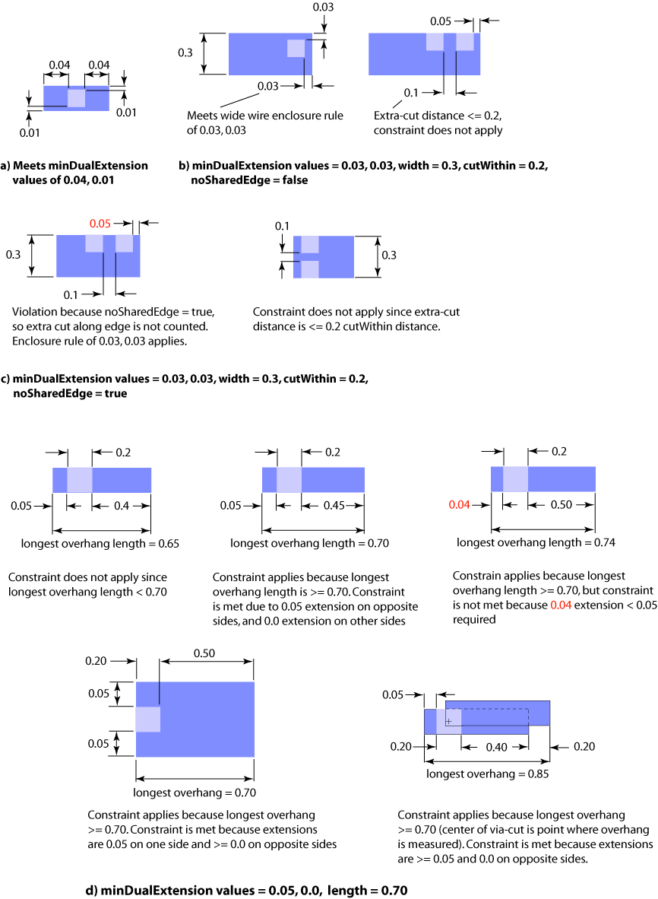

|
 |
 |
||||||
|
|
|
||||||
The built-in oacMinDualExtension layer pair constraint specifies, in database units, the minimum distance a shape on one layer must extend past a shape on a second layer. Extensions are measured from the outside edge of the shape on the second layer to the inside edge of the shape on the first layer.
This constraint specifies a pair of values. One value applies to extensions in one direction, and the other value applies to extensions in the other direction. If the first value applies to edges in the vertical direction, the second value must apply to the edges in the horizontal direction. Alternatively, if the first value applies to edges in the horizontal direction, the second value applies to the edges in the vertical direction. Each value can apply to a different direction for each shape on a layer.
This constraint can specify a single pair of values, or multiple pairs of values, that are keyed by wire width. In addition, multiple oacMinDualExtension constraints can be defined in a precedence constraint group. In such a constraint group, the constraints are ordered first by width and cut distance, then by width, and then by length. Members in the group that do not specify width have the lowest precedence.
Optional parameters can be used to qualify when the constraint applies. See the Parameters section below for more information about using the optional parameters. This constraint definition is not symmetric, which means that the minimum extension of layer1 past layer2 is not the same as the minimum extension of layer2 past layer1. If you specify an oacMinDualExtension constraint for a layer pair, you should not specify an oacMinExtension constraint.
oacMinDualExtension constraints have two values. One value is for one orthogonal direction, and the other value for the other orthogonal direction. The specific horizontal or vertical direction of each value is not implied. If the first value is used to evaluate the extension in the horizontal direction, the second value is used to evaluate the extension in the vertical direction.
| Constraint type: | oaLayerPairConstraint (Symmetric: no) |
| Value types: | oaDualIntValue, oaDualInt1DTblValue, oaIntDualIntArrayTblValue |
| Database types: | oaDesign, oaTech |
| Object types: | oaAppObject |
The following value types are supported by this constraint:
This value represents the minimum extension in each direction in database units
Units: DBU
This oaDualInt1DTblValue is used when the lookup key in each table represents the width of the shape on the second layer, and the value for each table represents the minimum extension of that second shape past the first.
Units: DBU
When an array of value pairs is assigned for a given width, width is expressed as an oaInt4, the array is an oaDualIntArray, and the value type is an oaIntDualIntArrayTblValue.
Units: DBU
The following parameters are supported by this constraint:
| Name | Value Type | Units | Default | Description |
|---|---|---|---|---|
| coincidentAllowed oacCoincidentAllowedParamType |
oaBooleanValue | Boolean | False |
When the coincidentAllowed parameter is specified and is true, then shapes can either meet the minimum extension or their edges can be coincident. If the parameter is false or is not specified, then the edges must meet the minimum extension specified and cannot be coincident. |
| length oacLengthConstraintParamType |
oaIntValue | DBU | None |
length is an oaIntValue that specifies the total length of the enclosure required for the extension pair. This parameter is represented by oacLengthConstraintParamType. This constraint only applies if the total enclosure length is greater than or equal to this length parameter. |
| oaCutDistance oacCutDistanceConstraintParamType |
oaIntValue | DBU | None |
cutWithin is an oaIntValue represented by oacCutDistanceConstraintParamType, which specifies a distance within which via cuts are considered. If there is another cut within a distance that is less than or equal to the distance given by this parameter, this constraint does not apply. |
| redundantCutDistance oacRedundantCutDistanceConstraintParamType |
oaIntValue | DBU | None |
The oacMinDualExtension constraint with this parameter has smaller enclosure requirements. It applies only if there is a redundant cut within cutWithin distance (with the same metal shape above and below) which has the required enclosures specified in an oacMinDualExtension rule without the redundant parameter. |
| oaNoSharedEdge oacNoSharedEdgeConstraintParamType |
oaBooleanValue | Boolean | False |
noSharedEdge is an oaBoolean value represented by oacNoSharedEdgeConstraintParamType that determines whether vias on a shared edge that are within the cutWithin distance are counted as redundant. If the value of this parameter is true, only vias that are not along the same wire edge can be counted as being inside the cutWithin distance. The default value of this parameter is false, which means that via cuts along the same wire edge are counted. |
| hasParallelRunLength oacHasParallelRunLengthConstraintParamType |
oaBooleanValue | Boolean | False |
If this parameter is set to true, a common parallel run length > 0 exist on the opposite edges for all of the failing edges of a cut. |
| cutClass oacCutClassConstraintParamType |
oaDualIntValue | DBU | None |
This parameter specifies the width and length dimensions of the cut class. |
| numCuts oacNumCutsConstraintParamType |
oaIntValue | Count | None |
Specifies the minimum required number of same metal cuts for which this constraint applies. |
| endSideOverhang oacEndSideOverhangConstraintParamType |
oaBooleanValue | Boolean | False |
If this parameter is set to true, the first overhang value in the oaDualIntValue is associated with the short edge of the cut and the second overhang value is associated with the long edge. |
| exceptCutMetalEdgeExtension oacExceptCutMetalEdgeExtensionConstraintParamType |
oaBooleanValue | Boolean | False |
If this parameter is true, and a via metal shape overlaps an edge of a wide wire, then the constraint would not apply to that edge. |

Extension rules ensure that the necessary overlaps are maintained to provide good connections after manufacturing. These kinds of constraints are common for metal shapes over cuts. If the process shifts the metal layer, the metal can uncover the cut and the resulting connection can be compromised. In the case of dual extension constraints, the larger extension is enough to maintain the connection when the geometry shifts. This allows for a smaller extension in the opposite direction than a uniform extension constraint might allow. Providing the minimum extensions of metal past a cut ensures that correct connections are maintained regardless of process variations.
Copyright 2002 - 2010 Cadence Design Systems, Inc.
All rights reserved.